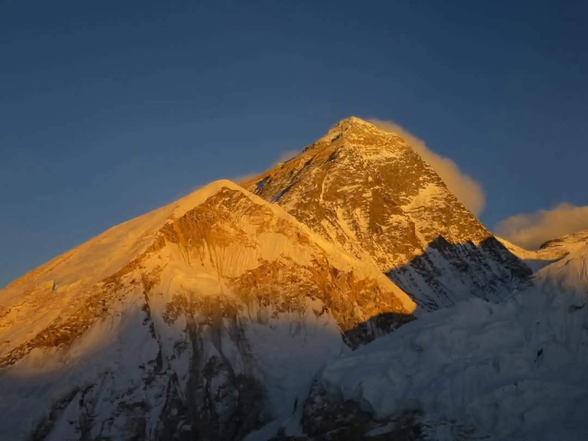
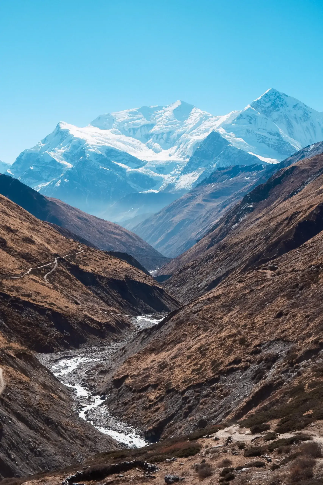
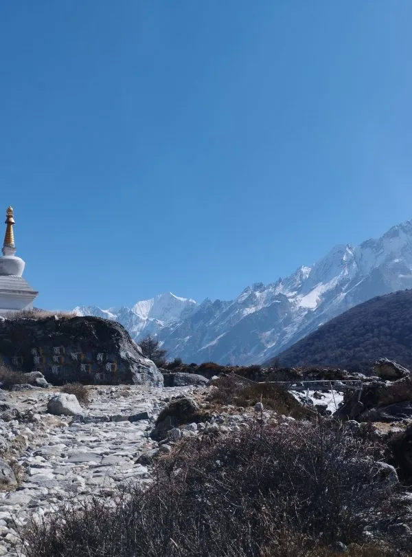
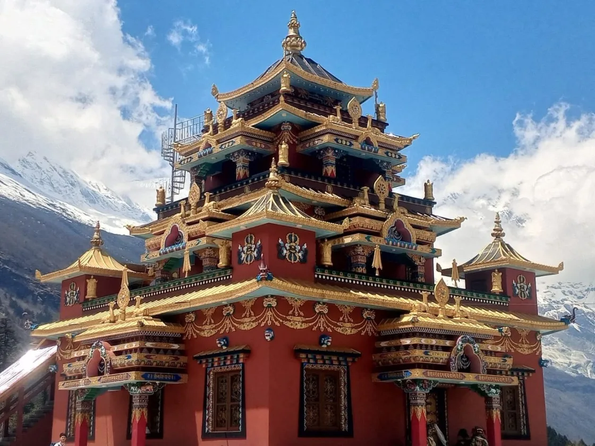
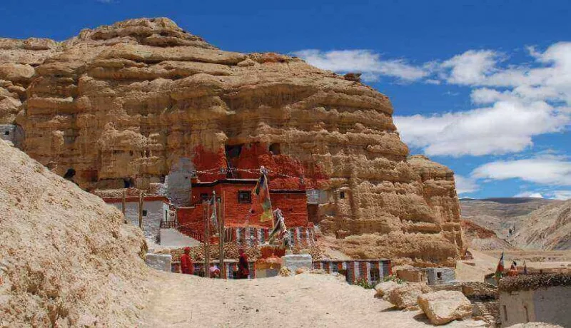
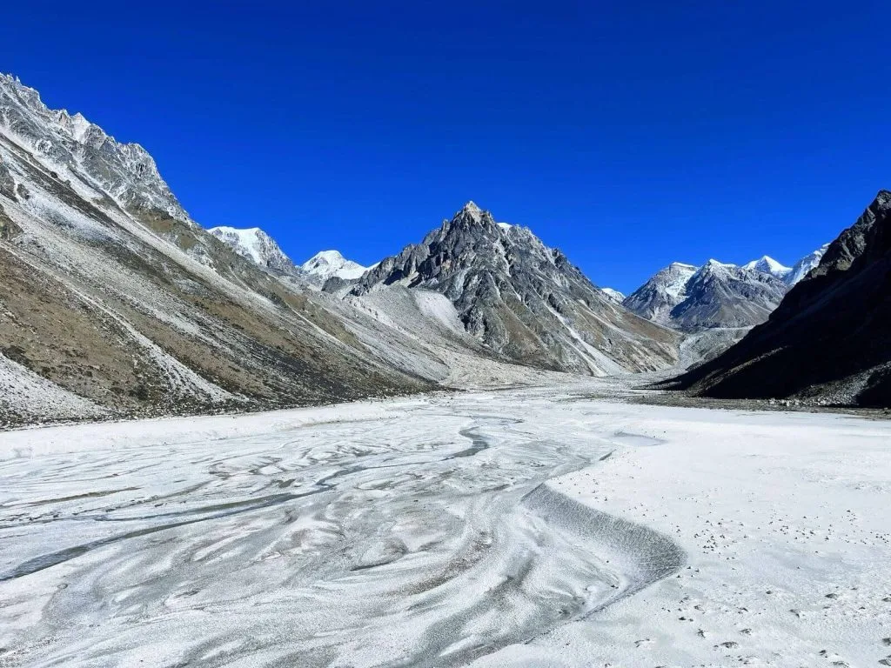
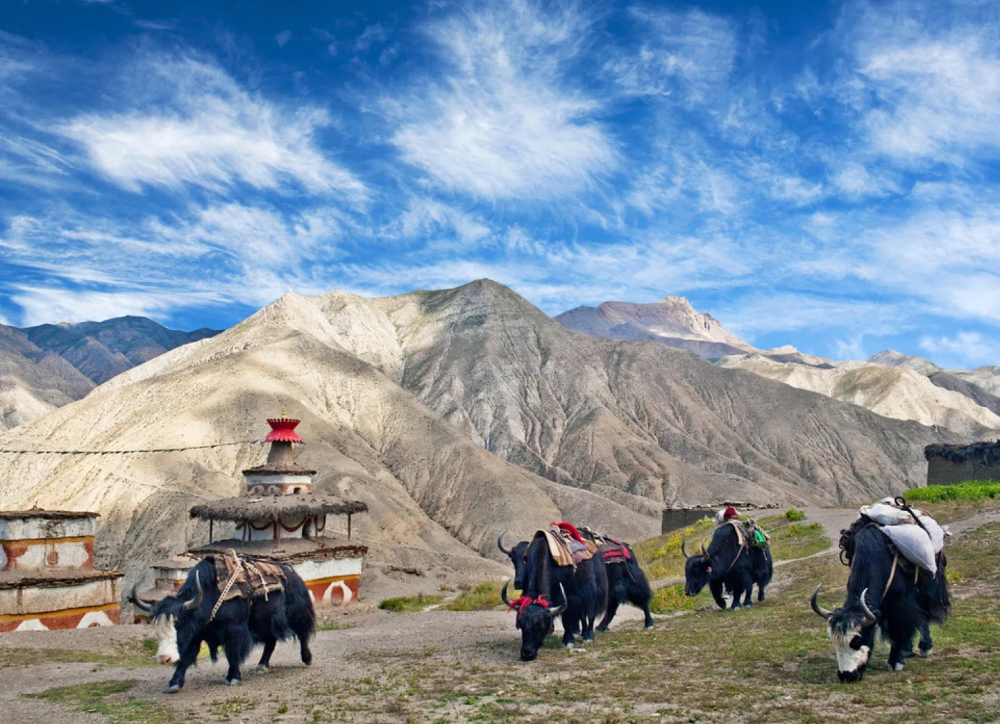
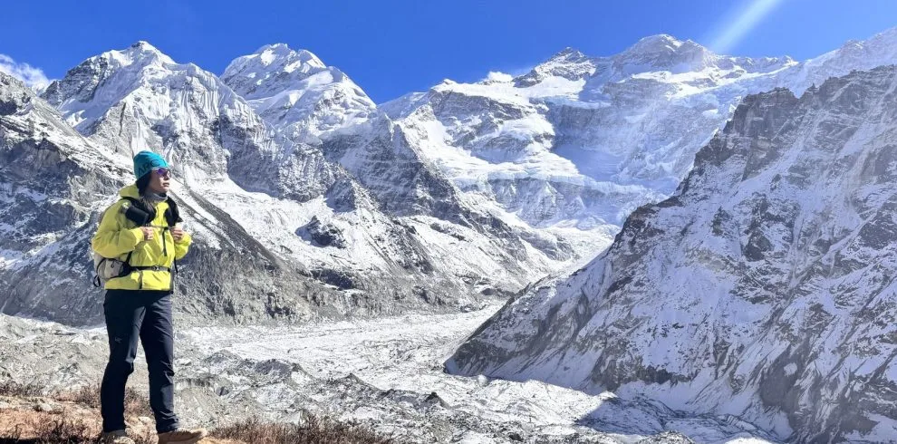
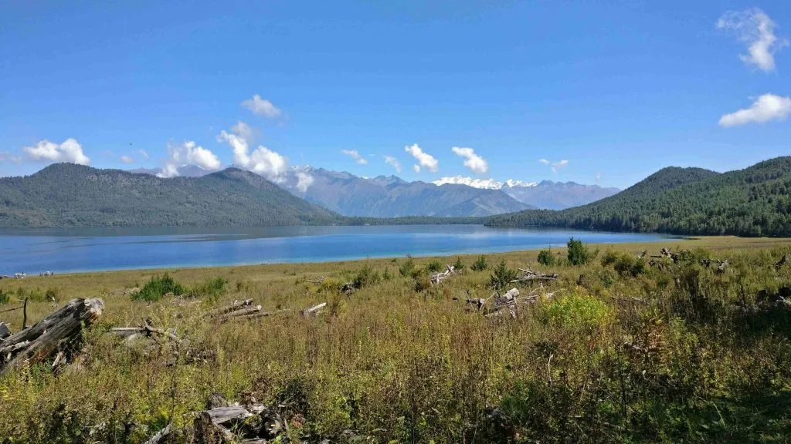

Trekking Regions in Nepal
Nepal is home to the world's greatest concentration of high-altitude peaks, stretching over 800 kilometers across the Great Himalayan Range. From the iconic glacial trails of Everest and Annapurna to the spiritual silence of Manaslu, the arid Tibetan kingdom of Mustang, and the untouched wilderness of Dolpo and Kanchenjunga—each region offers a distinct landscape, culture, and difficulty profile.
Nepal Himalayan Geography & Regional Zones
The Great Himalayan Range in Nepal is divided into three major geographical zones from west to east. Click any region chip below to jump directly to its full profile, trails, and permit specifications.
Find Your Ideal Trekking Region in 3 Clicks
Select your available trip duration, preferred trail challenge, crowd preference, and primary scenery highlight. Our tool instantly filters matching Himalayan destinations.

Everest (Khumbu) Region
The crown jewel of Himalayan trekking. Home to Mt. Everest (8,848m), legendary Sherpa villages, Tengboche Monastery, and turquoise Gokyo Lakes.

Annapurna Massif Region
Subtropical valleys to arctic passes. Renowned for Annapurna Base Camp, the classic Circuit over Thorong La (5,416m), and short panoramic ridge walks.

Langtang Valley Region
Known as the Valley of Glaciers. Rich Tamang culture, pristine yak pastures, and holy Gosaikunda alpine lakes accessible entirely by overland road without flights.

Manaslu Circuit Region
A peaceful, restricted-area alternative to the classic Annapurna loop. Circling Mt. Manaslu (8,163m) through traditional Tibetan villages and crossing high Larkya La pass.

Mustang Region (Upper & Lower)
Trans-Himalayan arid desert in the rain shadow of Annapurna. Ancient walled city of Lo Manthang, cliffside sky caves, and vibrant Buddhist festivals during summer monsoon.

Kanchenjunga Region
Far eastern frontier wilderness. Expedition-style circuit visiting both North (Pangpema) and South (Yalung) Base Camps amidst wild rhododendron forests and quiet Limbu villages.

Dolpo Region (Upper & Lower)
Deep turquoise Lake Phoksundo, ancient Bon monasteries, high passes, and caravan routes immortalized in Peter Matthiessen's 'The Snow Leopard'. Prime monsoon rain shadow.

Makalu Barun Region
Arun Valley and Barun River Gorge leading up to Mt. Makalu (8,485m), the world's 5th highest peak. Renowned for pristine biodiversity, steep granite spires, and raw alpine challenge.

Rolwaling Valley Region
Deep alpine valley beneath sacred Mt. Gaurishankar (7,134m). Features Tso Rolpa glacial lake and the demanding, glaciated Tashi Lapcha Pass (5,755m) crossing directly into Khumbu.

Rara Lake & Far-Western Nepal
Nepal's most untouched wilderness frontier. Serene mirror-like sapphire lake at 2,990m surrounded by blue pine and juniper forests, with total solitude far from commercial trails.
Compare Nepal's 10 Trekking Regions
Benchmark maximum altitudes, difficulty ratings, accommodation standards, accessibility modes, and relative trail crowd density across Nepal.
| Region | Signature Routes | Max Altitude | Difficulty Rating | Trail Lodging | Best Season | Access Method | Crowds |
|---|---|---|---|---|---|---|---|
| Everest (Khumbu) | EBC, Gokyo Lakes, Three Passes | 5,545 m | Moderate – High | Boutique Lodges & Teahouses | Mar–May, Sep–Nov | Flight (Lukla) / Drive | High |
| Annapurna Massif | Circuit, ABC, Mardi, Poon Hill | 5,416 m | Easy – Challenging | Extensive Teahouse Network | Mar–May, Sep–Dec | Road / Pokhara Flight | High |
| Langtang Valley | Langtang Valley, Gosaikunda | 4,984 m | Moderate | Comfortable Local Teahouses | Mar–May, Sep–Nov | Overland Road (Syabrubesi) | Moderate |
| Manaslu Circuit | Circuit, Tsum Hidden Valley | 5,106 m | Challenging | Authentic Village Teahouses | Mar–May, Sep–Nov | 4WD Overland Jeep | Lower |
| Mustang (Upper & Lower) | Upper Mustang, Lo Manthang | 3,950 m | Moderate | Good Heritage Hotels & Inns | Mar–Nov (Monsoon Dry) | Road / Jomsom Flight | Moderate |
| Kanchenjunga | North & South Base Camp Circuit | 5,143 m | Strenuous Expedition | Basic Homestays & Teahouses | Mar–May, Oct–Nov | Flight (Bhadrapur) + Jeep | Very Low |
| Makalu Barun | Makalu Base Camp Trek | 4,870 m | Strenuous Alpine | Basic Rustic Teahouses | Apr–May, Sep–Nov | Flight (Tumlingtar) + Jeep | Very Low |
| Dolpo Plateau | Upper Dolpo, Shey Phoksundo | 5,360 m | Wilderness Expedition | Camping & Simple Homestays | May–Oct (Rain Shadow) | Flight (Juphal via Nepalgunj) | Minimal |
| Rolwaling Valley | Tso Rolpa, Tashi Lapcha Pass | 5,755 m | Technical Glacial Pass | Camping & Basic Lodges | Apr–May, Oct–Nov | Overland Drive | Very Low |
| Rara & Far West | Rara Lake, Khaptad Plateau | 3,050 m | Moderate | Lakeside Hotels & Homestays | Mar–May, Sep–Dec | Flight (Talcha) / Jeep | Minimal |
Nepal's 10 Premier Trekking Regions
Discover in-depth information on permit regulations, highest viewpoints, best travel windows, teahouse infrastructure, and signature routes across every mountain region in Nepal.
1. Everest (Khumbu) Region
The Everest Region, known locally as the Khumbu, is Nepal's most world-famous trekking territory and home to the planet's highest summit, Mount Everest (8,848.86m). High-altitude trails link traditional Sherpa trading hubs like Namche Bazaar with ancient monasteries such as Tengboche, offering dramatic views of Ama Dablam, Lhotse, and Nuptse alongside classic routes to Everest Base Camp, Gokyo Lakes, and the Three High Passes.
2. Annapurna Massif Region
The Annapurna Region is celebrated for offering the greatest geographical diversity in Nepal within a single mountain system. Trekkers journey from subtropical terraced paddies and giant rhododendron forests up to the glacial amphitheater of Annapurna Base Camp (4,130m) or over the legendary Thorong La pass (5,416m) into the arid Tibetan-style landscapes of Manang and Mustang.
3. Langtang Valley Region
Located directly north of Kathmandu, Langtang is Nepal's most accessible high-altitude Himalayan region. Free from domestic flight delays, it combines rich Tamang Buddhist culture, dense pine and bamboo forests, traditional cheese factories in Kyanjin Gompa, and sacred high-altitude alpine lakes like Gosaikunda (4,380m).
4. Manaslu Circuit Region
The Manaslu Region provides a pristine, restricted-area alternative to the bustling Annapurna trails. Circumnavigating Mount Manaslu (8,163m)—the world's 8th highest mountain—this route features dramatic river gorges, authentic Tibetan Buddhist villages in Lho and Samagaon, and a dramatic high-altitude crossing over Larkya La (5,106m).
5. Mustang Region (Upper & Lower)
Shielded behind the colossal peaks of Annapurna and Dhaulagiri, Mustang is a dry, wind-sculpted plateau resembling Tibet. Divided into pilgrimage-centric Lower Mustang and restricted Upper Mustang, travelers explore ancient sky caves, deep red sandstone canyons, and the 15th-century walled capital of Lo Manthang. Its unique rain-shadow location makes it Nepal's premier summer monsoon destination.
6. Kanchenjunga Region
Towering on Nepal's far eastern border with Sikkim, Mount Kanchenjunga (8,586m) is the 3rd highest mountain on Earth. This remote expedition traverses temperate rhododendron jungles, alpine pastures, and high passes like Sele La, reaching both North (Pangpema) and South (Yalung) Base Camps in complete mountain silence.
7. Makalu Region
The Makalu Region encompasses the Arun Valley and Barun River Gorge leading up to Mount Makalu (8,485m)—the world's 5th highest mountain. Renowned for its rare flora, steep granite cliffs, and pristine hanging glaciers, Makalu Base Camp is an authentic, demanding expedition for experienced mountain trekkers.
8. Dolpo Region (Upper & Lower)
Immortalized in Peter Matthiessen's classic "The Snow Leopard", Dolpo is Nepal's ultimate trans-Himalayan wilderness. It features deep turquoise Lake Phoksundo, 800-year-old Bon monasteries in Ringmo and Shey Gompa, high alpine passes like Kang La (5,360m), and ancient yak caravan trails.
9. Rolwaling Region
Nestled directly west of the Khumbu under holy Mount Gaurishankar (7,134m), Rolwaling is a steep, forested alpine valley rich in Sherpa folklore. Crossing Tso Rolpa glacial lake and traversing the technical, crevassed Tashi Lapcha Pass (5,755m) connects Rolwaling straight into the Everest region.
10. Rara Lake & Far-Western Nepal
Far-Western Nepal is the country's most serene and untouched wilderness. Centered around Rara Lake—Nepal's largest alpine lake at 2,990m—and extending to Khaptad plateau and Api/Saipal base camps, this region offers sapphire blue waters, blue pine forests, and total mountain solitude far from commercial tourism.
Best Trekking Regions in Nepal by Season
Understanding monsoon rain shadows and winter snow conditions ensures you choose the right region for your dates.
| Season | Months | Weather & Trail Conditions | Recommended Regions |
|---|---|---|---|
| Spring | March – May | Rhododendron blossoms, warming temperatures, crystal clear morning mountain views | Everest, Annapurna, Langtang, Manaslu, Kanchenjunga |
| Summer / Monsoon | June – August | Heavy rains in southern valleys; dry Tibetan rain-shadow plateaus remain clear and warm | Upper Mustang & Upper Dolpo (Rain Shadow) |
| Autumn | September – November | Prime trekking season; post-monsoon crisp clarity, stable dry skies, ideal pass crossing | All Trekking Regions across Nepal |
| Winter | December – February | Dry crisp skies, cold nights; heavy snow on high passes over 5,000 meters | Lower Annapurna, Ghorepani Poon Hill, Everest Short View, Langtang |
Which Region Fits Your Trekking Style?
For First-Time Trekkers
Regions with reliable teahouses, gradual altitude progression, and overland access without domestic flight delays.
Recommended:For High-Pass Adventurers
Challenging routes crossing high-altitude mountain passes over 5,000 meters requiring endurance and acclimatization.
Recommended:For Cultural Immersion
Deep cultural exchange with Sherpa, Gurung, Tamang, and preserved Tibetan Buddhist monastic traditions.
Recommended:For Remote Wilderness Solitude
Expedition-style treks far off commercial tourist corridors with basic lodges or wilderness camping.
Recommended:Trekking Routes by Region
Browse our full portfolio of curated trekking itineraries organized by Himalayan region.
What Our Lead Guides Say About Each Region
Real advice from guides who spend 8 to 9 months per year on high Himalayan trails.
"The Khumbu is busy during October, but once you branch off toward the Gokyo Lakes or cross Cho La Pass, you get pure Himalayan silence surrounded by 8,000m giants like Cho Oyu, Everest, and Makalu."
"Manaslu gives trekkers what the Annapurna Circuit felt like thirty years ago—authentic stone-house villages, zero vehicle noise for days, and a truly breathtaking crossing over Larkya La."
"Upper Mustang and Dolpo are like entering another realm. The wind-carved red clay canyons, ancient cave dwellings, and preserved Tibetan culture in Lo Manthang make it unbeatable during monsoon months."
Frequently Asked Questions About Trekking Regions
Answers to common questions regarding permits, altitude, seasons, logistics, and choosing the right region.
Ready to Explore Nepal's Mountain Realms?
Tell us how many days you have, your preferred scenery, fitness level, and travel window. Our Kathmandu-based trekking specialists will craft a customized, transparently priced itinerary within 2 to 4 hours.